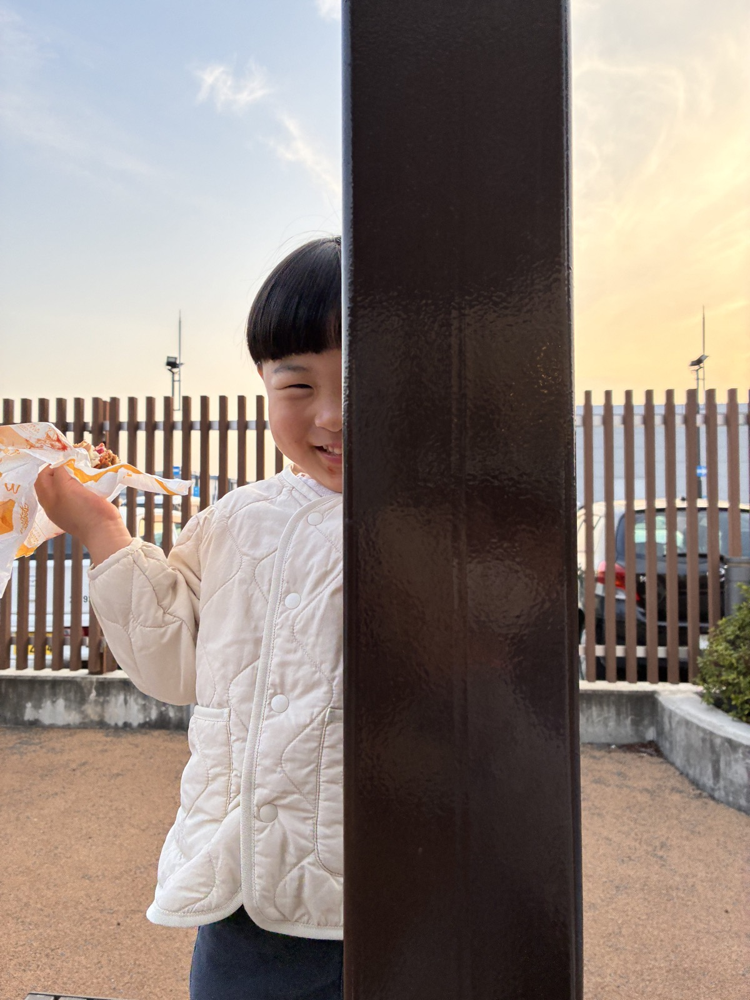

事前に内容を確認するための面談料金です。
ご利用料金
ベビーシッターと料理代行の料金を、
サービス別に分けて確認できます。内容・量・ご家庭の状況により変わる部分は、事前にお見積りします。

0〜12歳対応
福岡でお子さまを見守るベビーシッター
習い事などの送迎、急な仕事や私用、夜間や発熱時のご相談まで。
初めての方にも安心して頼っていただける関わりを大切にしています。
必要な日時だけ相談できます。
継続利用向けの料金です。
病児保育OKサービス手数料なし
| 項目 | 料金 | 補足 |
|---|---|---|
| 初回事前面談 | 1,500円 | 初めての方も安心して相談できるよう、内容確認を行います。 |
| 単発依頼 | 2,200円/時 | 仕事、私用、リフレッシュなど必要な時間だけ。 |
| 定期依頼 | 1,800円/時 | 月2回以上、曜日や時間を決めて利用したい方向け。 |
| 病児保育 | +500円/時 | 対応可否をご案内します。 |
| 兄弟加算 | +500円/時 | きょうだいでの見守りを希望される場合。 |
| 送迎のみ | 1,500円/回 | 習い事や保育園などの送迎だけでも相談できます。 |
ご依頼の流れ
- 1
まずはご相談
LINEまたはフォームから、希望日時や内容を送ってください。
- 2
事前面談
お子さま・ご家庭の状況やご要望を確認します。
- 3
シッティング開始
内容に納得いただいてからサポートを開始します。
作り置き・下味冷凍
あなたの“おいしい時間”を支える料理代行
作り置き、下味冷凍、離乳食、幼児食まで。
品数やメニューは自由に組み合わせでき、買い物代行も相談できます。
2時間・5品保証。はじめての方におすすめです。
2時間・5品保証から。内容や量に合わせて調整します。
品数は自由にメニューは自由に下味冷凍OK買い物代行・相談OK
| 時間 | 品数の目安 | 単発利用 | 定期利用 10%OFF |
|---|---|---|---|
| 2時間〜 | 5品保証〜 | 5,980円〜 | 5,382円〜 |
| 3時間〜 | 8品前後 | 8,960円〜 | 8,064円〜 |
| 4時間〜 | 10〜12品前後 | 11,940円〜 | 10,746円〜 |
オプション
- 買い物代行 +1,100円
- 離乳食対応 無料（基本時間内）
- 下味冷凍OK
定期利用でお得に
月2回以上のご利用で、定期割引を適用します。
ご依頼の流れ
- 1
まずはご相談
LINEまたはフォームから、希望内容を送ってください。
- 2
事前ヒアリング
食材、アレルギー、ご希望のメニューを確認します。
- 3
料理開始
ご家庭のキッチンで調理します。
共通のご案内
| 交通費 | 保護者様のご負担となります。車利用の場合は駐車場代、交通機関利用の場合は実際にかかった交通費を後日請求いたします。 |
|---|---|
| キャンセル料 | 予約確定後のキャンセルは、タイミングによりキャンセル料が発生する場合があります。 |
| お支払い方法 | 現金、銀行振込、オンライン決済など、対応方法はご予約時にご案内します。 |
| お見積り | 内容・量・キッチン環境により時間内で調整します。迷う場合はLINEでお気軽にご相談ください。 |
料金に関するよくあるご質問
ベビーシッターの単発利用はいくらですか？
単発依頼は2,200円/時間です。定期依頼は1,800円/時間でご利用いただけます。
福岡でベビーシッターを1時間だけ頼めますか？
はい。単発依頼は1時間単位でご相談いただけます。希望日時やサポート内容を確認したうえで対応可否をご案内します。
福岡市で送迎のみのベビーシッター料金はいくらですか？
送迎のみは1回1,500円です。保育園、幼稚園、習い事、ご自宅間の経路や引き渡し方法を事前に確認します。
料理代行の初回お試しはいくらですか？
2時間・5品保証で4,980円です。下味冷凍や買い物代行の相談も可能です。
料理代行の作り置きだけでも頼めますか？
はい。作り置きのみのご相談も可能です。2時間・5品保証の基本プランを目安に、ご家庭の人数や希望メニューに合わせて調整します。
料理代行では何品くらい作れますか？
目安は2時間で5品保証、3時間で8品前後、4時間で10〜12品前後です。キッチン環境やメニュー内容により変わるため、事前にご案内します。
離乳食や幼児食も料金内で相談できますか？
離乳食対応は基本時間内で無料相談できます。月齢、食べ進み、アレルギー、保存方法を確認しながら内容をご提案します。
福岡市外でもベビーシッターや料理代行を頼めますか？
福岡市を中心に、春日市・大野城市など福岡県内もご相談いただけます。訪問先や時間帯により対応可否と交通費を確認します。
料理代行の定期割引はありますか？
月2回以上のご利用で10%OFFの目安料金をご案内しています。
サービス手数料はかかりますか？
サービス手数料は無料です。交通費や買い物代行など、必要な費用は事前に確認します。